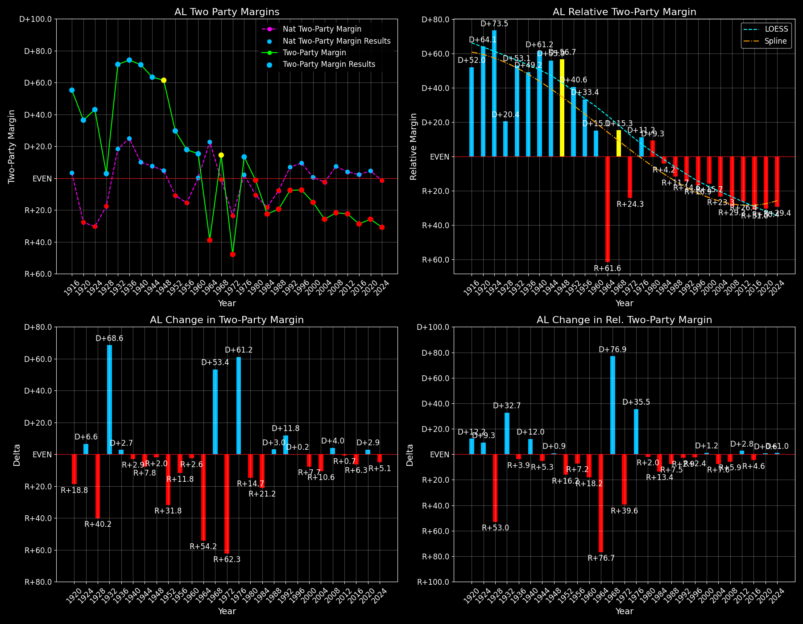

Alabama (AL) — Statewide

Margins · 3rd-Party share · Pres. deltas

Relative margins · Relative 3rd-Party · Rel. deltas
Alabama (AL) — Total Data
| Year | EVs | D | R | State Margin | Nat. Margin | Rel. Margin | Total votes |
|---|---|---|---|---|---|---|---|
| 1968 | 10 | 196,389(19.0%) | 146,284(14.2%) | D+4.8 | R+0.6 | D+5.4 | 1,033,404 |
| 1972 | 9 | 254,769(25.9%) | 727,034(74.1%) | R+48.1(Δ R+53.0) | R+23.5(Δ R+23.0) | R+24.6(Δ R+30.0) | 981,803 |
| 1976 | 9 | 658,466(56.7%) | 501,998(43.3%) | D+13.5(Δ D+61.6) | D+2.2(Δ D+25.7) | D+11.3(Δ D+35.9) | 1,160,464 |
| 1980 | 9 | 635,696(48.8%) | 651,377(50.0%) | R+1.2(Δ R+14.7) | R+9.9(Δ R+12.1) | D+8.7(Δ R+2.6) | 1,303,513 |
| 1984 | 9 | 551,899(38.7%) | 872,849(61.3%) | R+22.5(Δ R+21.3) | R+18.1(Δ R+8.2) | R+4.4(Δ R+13.1) | 1,424,748 |
| 1988 | 9 | 549,506(40.3%) | 815,576(59.7%) | R+19.5(Δ D+3.0) | R+7.7(Δ D+10.4) | R+11.7(Δ R+7.3) | 1,365,082 |
| 1992 | 9 | 690,080(41.1%) | 804,283(47.9%) | R+6.8(Δ D+12.7) | D+5.6(Δ D+13.3) | R+12.4(Δ R+0.6) | 1,677,472 |
| 1996 | 9 | 662,066(43.5%) | 768,826(50.5%) | R+7.0(Δ R+0.2) | D+8.6(Δ D+3.0) | R+15.6(Δ R+3.2) | 1,523,520 |
| 2000 | 9 | 692,610(41.6%) | 941,172(56.5%) | R+14.9(Δ R+7.9) | D+0.5(Δ R+8.0) | R+15.4(Δ D+0.1) | 1,665,242 |
| 2004 | 9 | 693,792(36.9%) | 1,175,513(62.5%) | R+25.6(Δ R+10.7) | R+2.5(Δ R+3.0) | R+23.1(Δ R+7.7) | 1,881,835 |
| 2008 | 9 | 813,473(38.8%) | 1,266,530(60.3%) | R+21.6(Δ D+4.0) | D+7.3(Δ D+9.7) | R+28.8(Δ R+5.7) | 2,098,939 |
| 2012 | 9 | 795,605(38.4%) | 1,255,875(60.7%) | R+22.2(Δ R+0.6) | D+3.9(Δ R+3.4) | R+26.1(Δ D+2.7) | 2,070,184 |
| 2016 | 9 | 729,546(34.7%) | 1,318,259(62.7%) | R+28.0(Δ R+5.8) | D+2.1(Δ R+1.8) | R+30.1(Δ R+4.0) | 2,101,661 |
| 2020 | 9 | 850,086(36.6%) | 1,441,167(62.0%) | R+25.4(Δ D+2.6) | D+4.4(Δ D+2.3) | R+29.9(Δ D+0.2) | 2,324,465 |
| 2024 | 9 | 772,412(34.1%) | 1,462,616(64.6%) | R+30.5(Δ R+5.0) | R+1.5(Δ R+6.0) | R+28.9(Δ D+0.9) | 2,265,090 |
Column explanations
- Δ
- Change (delta) in the value from the previous election year.
- Year
- Election year.
- EVs
- Number of electoral votes allocated to this state or unit.
- D
- Number of votes for the Democratic candidate (raw count(pct%)).
- R
- Number of votes for the Republican candidate (raw count(pct%)).
- State Margin
- Margin between the two major-party candidates, including third-party votes ((D - R)/total).
- Nat. Margin
- The national presidential margin for that year, including third-party votes ((D_total - R_total)/total_votes).
- Rel. Margin
- The presidential margin relative to the national presidential margin (Margin - Nat. Margin).
- Total votes
- Total voter turnout or ballots cast (when provided).
Alabama (AL) — Third-Party Data
| Year | Other votes | State 3rd-Party Share | 3rd-Party Nat. Share | 3rd-Party Rel. Share |
|---|---|---|---|---|
| 1968 | 690,731(66.8%) | 66.84% | 13.59% | 53.25% |
| 1972 | 0(0.0%) | 0.00% | 0.09% | -0.09% |
| 1976 | 0(0.0%) | 0.00% | 0.33% | -0.33% |
| 1980 | 16,440(1.3%) | 1.26% | 6.98% | -5.71% |
| 1984 | 0(0.0%) | 0.00% | 0.12% | -0.12% |
| 1988 | 0(0.0%) | 0.00% | 0.21% | -0.21% |
| 1992 | 183,109(10.9%) | 10.92% | 19.23% | -8.32% |
| 1996 | 92,628(6.1%) | 6.08% | 9.68% | -3.60% |
| 2000 | 31,460(1.9%) | 1.89% | 3.65% | -1.76% |
| 2004 | 12,530(0.7%) | 0.67% | 0.84% | -0.17% |
| 2008 | 18,936(0.9%) | 0.90% | 1.38% | -0.48% |
| 2012 | 18,704(0.9%) | 0.90% | 1.62% | -0.72% |
| 2016 | 53,856(2.6%) | 2.56% | 5.54% | -2.97% |
| 2020 | 33,212(1.4%) | 1.43% | 1.84% | -0.41% |
| 2024 | 30,062(1.3%) | 1.33% | 1.88% | -0.55% |
Column explanations
- Year
- Election year.
- Other votes
- Number of votes for third-party (other) candidates (raw count(pct%)).
- State 3rd-Party Share
- Share of the vote received by third-party (other) candidates.
- 3rd-Party Nat. Share
- The national third-party share for that year (3rd-Party votes / total votes).
- 3rd-Party Rel. Share
- Third-party share relative to the national third-party share (3rd-Party share - Nat. 3rd-Party share).

Two-party margins · relative · deltas
Alabama (AL) — Two-Party Data
| Year | 2-Party Margin | 2-Party Nat. Margin | 2-Party Rel. Margin |
|---|---|---|---|
| 1968 | D+14.6 | R+0.7 | D+15.3 |
| 1972 | R+48.1(Δ R+62.7) | R+23.6(Δ R+22.9) | R+24.5(Δ R+39.8) |
| 1976 | D+13.5(Δ D+61.6) | D+2.2(Δ D+25.8) | D+11.3(Δ D+35.8) |
| 1980 | R+1.2(Δ R+14.7) | R+10.6(Δ R+12.8) | D+9.4(Δ R+1.9) |
| 1984 | R+22.5(Δ R+21.3) | R+18.1(Δ R+7.5) | R+4.4(Δ R+13.8) |
| 1988 | R+19.5(Δ D+3.0) | R+7.8(Δ D+10.4) | R+11.7(Δ R+7.3) |
| 1992 | R+7.6(Δ D+11.8) | D+6.9(Δ D+14.7) | R+14.6(Δ R+2.8) |
| 1996 | R+7.5(Δ D+0.2) | D+9.5(Δ D+2.6) | R+16.9(Δ R+2.4) |
| 2000 | R+15.2(Δ R+7.8) | D+0.5(Δ R+8.9) | R+15.7(Δ D+1.2) |
| 2004 | R+25.8(Δ R+10.6) | R+2.5(Δ R+3.0) | R+23.3(Δ R+7.5) |
| 2008 | R+21.8(Δ D+4.0) | D+7.4(Δ D+9.8) | R+29.1(Δ R+5.9) |
| 2012 | R+22.4(Δ R+0.7) | D+3.9(Δ R+3.4) | R+26.4(Δ D+2.8) |
| 2016 | R+28.7(Δ R+6.3) | D+2.2(Δ R+1.7) | R+31.0(Δ R+4.6) |
| 2020 | R+25.8(Δ D+3.0) | D+4.5(Δ D+2.3) | R+30.3(Δ D+0.6) |
| 2024 | R+30.9(Δ R+5.1) | R+1.6(Δ R+6.1) | R+29.3(Δ D+1.0) |
Column explanations
- Δ
- Change (delta) in the value from the previous election year.
- Year
- Election year.
- 2-Party Margin
- Margin between the two major-party candidates, ignoring third-party votes ((D - R)/(D + R)).
- 2-Party Nat. Margin
- The national presidential margin for that year, including third-party votes ((D_total - R_total)/total_votes).
- 2-Party Rel. Margin
- The presidential margin relative to the national presidential margin (Margin - Nat. Margin).